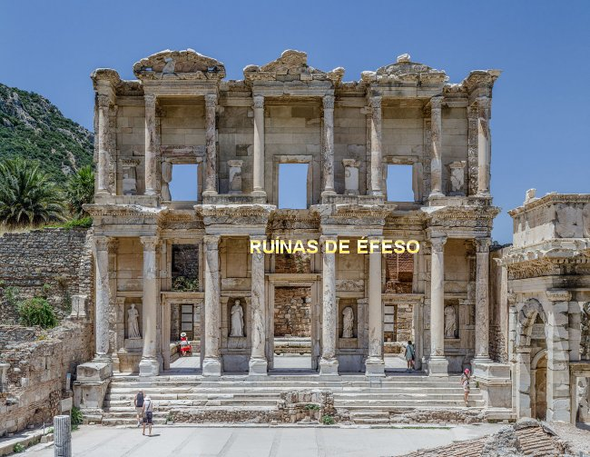
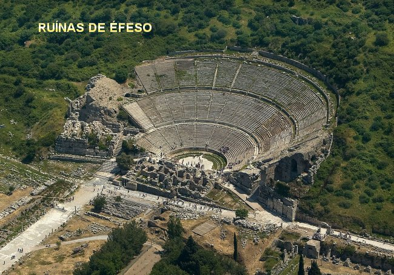
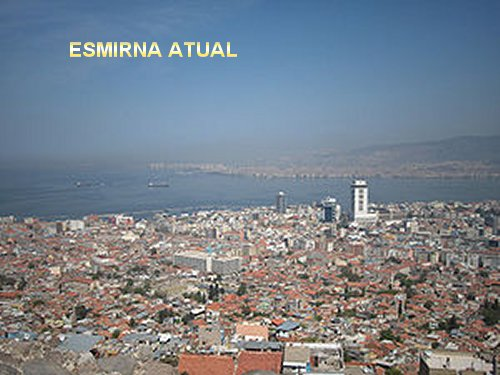
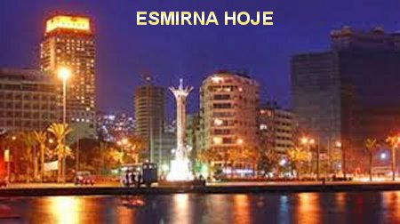
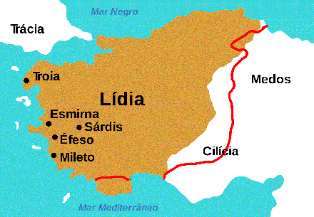
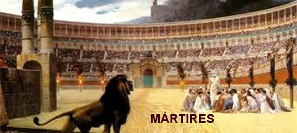
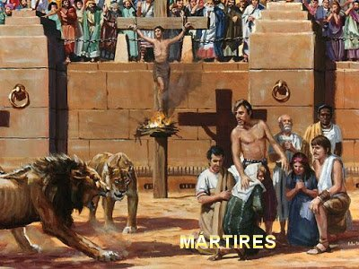

"IMAGENS"





O territ�rio da "L�dia" faz parte do atual territ�rio da TURQUIA



"CONVITE"
Este Site foi constru�do pelo Apostolado dos Sagrados Cora��es. Clique aqui ou no endere�o abaixo para visitar o nosso PORTAL. Nele encontrar� uma apreci�vel quantidade de Sites sobre o CRIADOR, o ESP�RITO SANTO, JESUS DE NAZAR�, sobre NOSSA SENHORA, os SANTOS ANJOS e Sites que apresentam a Vida e Obra de diversos SANTOS. Todos eles elaborados com muito amor e dedica��o, fundamentados na Sagrada Escritura, na Tradi��o Crist�, na Vida e Obra dos Santos e nas Manifesta��es Sobrenaturais, sobretudo, com a inten��o de somente informar a Verdade.
http://www.apostoladosagradoscoracoes.com/

Desejando comunicar-se conosco, por favor utilize o E-mail abaixo:
E-mail = apostoladosagradoscoracoes@hotmail.com"

FIRMAS QUE DIVULGAM O SITE